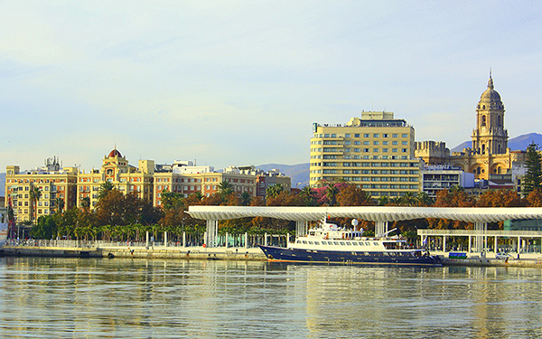
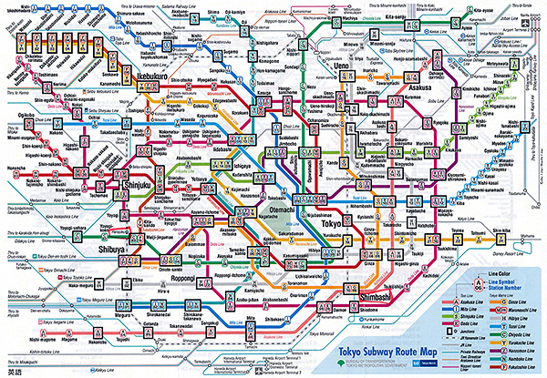

Don’t Think Big, Think Small
By Tim Svoboda
Dear YWAM Leaders,
Some years back, I wrote a series of emails titled, The Urban Challenge.
I am going to send you another three emails, in the next few weeks, as I believe cities are the future for world missions. Here is the first one.
Don't think big – think small.
More than half the world’s population of 7.25 billion is now living in urban areas. But don't think this means we have to focus on just the large cities of the world like London, New York, Beijing or Mumbai. Certainly these Super Giant Cities need our presence but the fact is, there are only 33 cities in the world with a population over 10 million people. These 33 are cities that are called Major Agglomerations which include multiple smaller towns, cities, and urban locations surrounding them. In these 33 super giant cities there are a total of 620,400,000 people which only make up only 17% of the total Urban population (3.65 billion + people) of the world.
So, where are the rest of the urban people of the world? There are another 1,262,775,000 in 533 cities over 1 million to 10 million people. This adds another 35% of the worlds urban population living in these cities of 1 to 10 million people. That means that almost another 50% of the world's urban population are living in cities of less than 1 million. In fact, there are over 40,000 urban locations on the planet with a population less than 100,000.

So, urban locations like Bend, Oregon; Harpenden, England; Malaga, Spain; Mendoza, Argentina; Sivakasi, India and a host of other small cities often get overlooked when we talk about cities. Yet these smaller cities are strategic for several reasons.
First of all, as a general rule the smaller the city in the 10/40 Window the less reached it is with the gospel. This is because the first wave of missions went to the port cities of the world and then tended to work where the missionaries had conveniences. As we look at the 10/40 Window it is the smaller towns and urban areas where there are very few churches.
These smaller towns in the 10/40 Window often lack the infrastructure and the conveniences which makes life more difficult. They are neither Urban nor Rural. They are a mix of the two together making up what I would call RURBAN. These smaller urban areas are often interconnected with the countryside and local agriculture. We as YWAM need to strategically position ourselves in places where the church finds it difficult to go.
As YWAM enters these spaces, as a vibrant community interconnecting outside of our own four walls and into the life of these smaller cities with our diversity, creativity and unity, we can make a strong impact as we live amongst the very people we seek to reach.
A second reason these smaller cities are strategic is because the smaller the urban location the less complicated. I remember my first time visit to the Mother of all cities – Tokyo. I went to the subway station to try to figure out how to go from Nagano to Yokohama crossing the city of Tokyo. I felt like I had to get my Ph.D. to read the subway map. Super Giant cities like New York, London, Beijing, Mumbai and Moscow are Super complicated. Just think of Los Angeles, California. If you want to network with the churches and build a unified city church movement how do you bring the more than 14,000 churches of this great metro giant together? It can be done, but mega cities often take mega leaders. Smaller cities are less complicated. A city like Rovanieimi, Finland which has a population of just 61,000 people is already being impacted by the vibrant YWAM work that is there.

A third and final reason these cities are so key is because they are the future. As land and rent prices continue to rise in the large cities people will want to live in smaller towns and cities that have lower prices, good local transportation systems or where they can walk or bicycle to work. These smaller cities will become communities where people live, work, play and shop. As YWAM enters these spaces, as a vibrant community interconnecting outside of our own four walls and into the life of these smaller cities with our diversity, creativity and unity we can make a strong impact as we live amongst the very people we seek to reach. YWAMers trained in agriculture, aquaponics, vertical gardens, alternative energy sources will mix well into these smaller cities that will connect both rural and urban together.
So think small! Move to these cities with less than 1 million people that contain over 50% of the worlds urban population and lets make a transformational impact.
Tim Svoboda